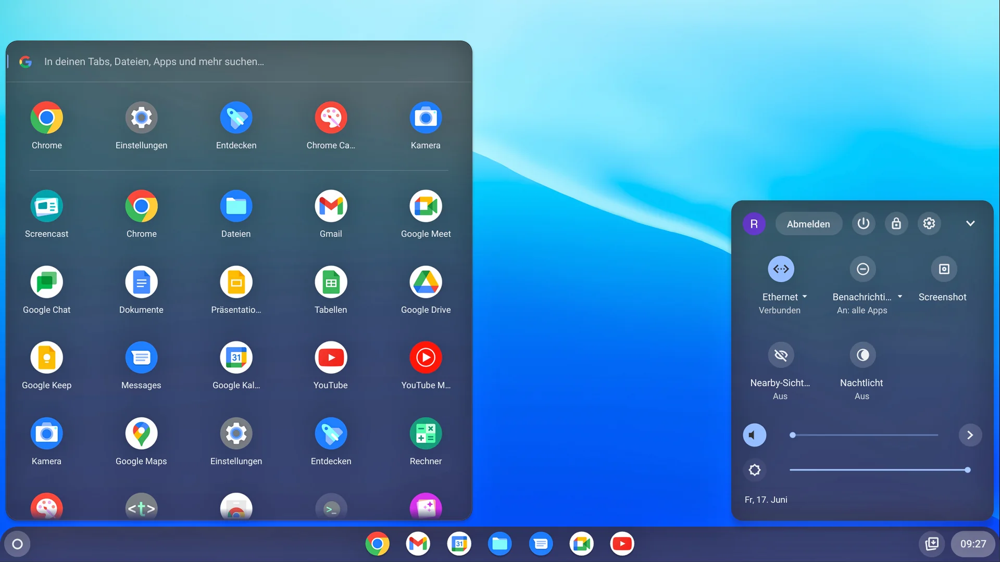

História do Chrome OS
O Chrome OS foi anunciado publicamente pelo Google em julho de 2009, como um sistema operacional leve e baseado na web. A ideia principal era oferecer uma experiência rápida, simples e segura, focada quase exclusivamente no navegador Chrome. Em 2011, os primeiros Chromebooks foram lançados em parceria com a Samsung e a Acer. Com o tempo, o sistema evoluiu para incluir suporte a aplicativos Android (2016) e aplicativos Linux (2018), além de recursos offline e uma experiência de usuário cada vez mais completa. Hoje, o Chrome OS é amplamente utilizado em escolas, empresas e por usuários domésticos que buscam praticidade e segurança.
O que é o Chrome OS?
O Chrome OS é um sistema operacional baseado no Linux, desenvolvido pelo Google, e lançado oficialmente em 2011. Inicialmente focado no uso online através do navegador Chrome, ele rapidamente se expandiu para incorporar suporte a aplicativos Android, aplicativos Linux e funcionamento offline aprimorado. Com uma filosofia de "computação na nuvem", ele permite que os usuários acessem seus arquivos, documentos e aplicativos de qualquer lugar, de forma rápida e segura, aproveitando a infraestrutura robusta dos serviços Google.
O Chrome OS é conhecido por seu desempenho otimizado em hardware de baixo custo, com inicialização rápida, atualizações automáticas e forte proteção contra ameaças digitais.

Características Principais
- Inicialização Rápida: O Chrome OS pode iniciar em menos de 10 segundos em muitos dispositivos, permitindo acesso quase instantâneo às suas atividades.
- Atualizações Automáticas: As atualizações são aplicadas em segundo plano, sem necessidade de ação do usuário, mantendo o sistema seguro, rápido e sempre atualizado.
- Alta Segurança: O Chrome OS possui múltiplas camadas de segurança, como sandboxing de processos, Verified Boot (verificação da integridade do sistema a cada inicialização) e criptografia automática de arquivos locais.
- Integração com o Google: Sincronização automática com o Google Drive, Google Docs, Gmail, YouTube, Google Fotos, e integração direta com o Google Assistant para produtividade e entretenimento otimizados.
- Interface Simples e Intuitiva: Um sistema limpo e direto ao ponto, com multitarefa eficiente, barra de tarefas personalizável (shelf) e gerenciador de janelas fluido.
Dispositivos com Chrome OS
Dispositivos que utilizam o Chrome OS são chamados de Chromebooks (notebooks), Chromeboxes (mini PCs) e Chromebases (PCs all-in-one com tela integrada).
Esses dispositivos são caracterizados por:
- Preço Acessível: Modelos básicos podem custar significativamente menos do que laptops tradicionais, tornando-os ideais para escolas, estudantes e usuários que buscam custo-benefício.
- Design Leve e Portátil: Chromebooks geralmente pesam entre 1 e 1,5 kg e contam com baterias de longa duração, com autonomia que pode ultrapassar 12 horas em alguns modelos.
- Suporte para Aplicativos Android: Desde 2016, muitos Chromebooks suportam a Google Play Store, permitindo acesso a milhões de apps, jogos e serviços Android diretamente no Chrome OS.
- Compatibilidade com Linux: Através do recurso "Crostini", usuários podem instalar ambientes Linux completos para desenvolvimento de software, administração de servidores e uso de ferramentas avançadas como VS Code, GIMP, e Terminal bash.

Benefícios do Chrome OS
- Leveza e Agilidade: Mesmo em dispositivos com processadores mais modestos e memória limitada, o Chrome OS oferece uma experiência fluida e responsiva.
- Produtividade em Qualquer Lugar: Compatibilidade com o Google Workspace, Google Meet, Zoom, aplicativos Android e software Linux garante uma ampla variedade de ferramentas para estudos, trabalho e comunicação.
- Fácil Gerenciamento: Com o Google Admin Console, escolas e empresas podem configurar, monitorar e gerenciar milhares de dispositivos remotamente, aplicando políticas de segurança e atualização de forma simples.
- Modo Offline: Chrome OS oferece suporte offline para aplicativos essenciais, como Gmail Offline, Google Docs Offline, e acesso local a arquivos salvos no dispositivo.
- Atualizações de Longo Prazo (LTS): Muitos modelos novos de Chromebook têm suporte oficial garantido até 8 anos após o lançamento do dispositivo, assegurando atualizações regulares de segurança e recursos.
- Sustentabilidade: Fabricantes de Chromebooks estão adotando materiais recicláveis, embalagens ecologicamente corretas e certificações como Energy Star, visando reduzir o impacto ambiental.